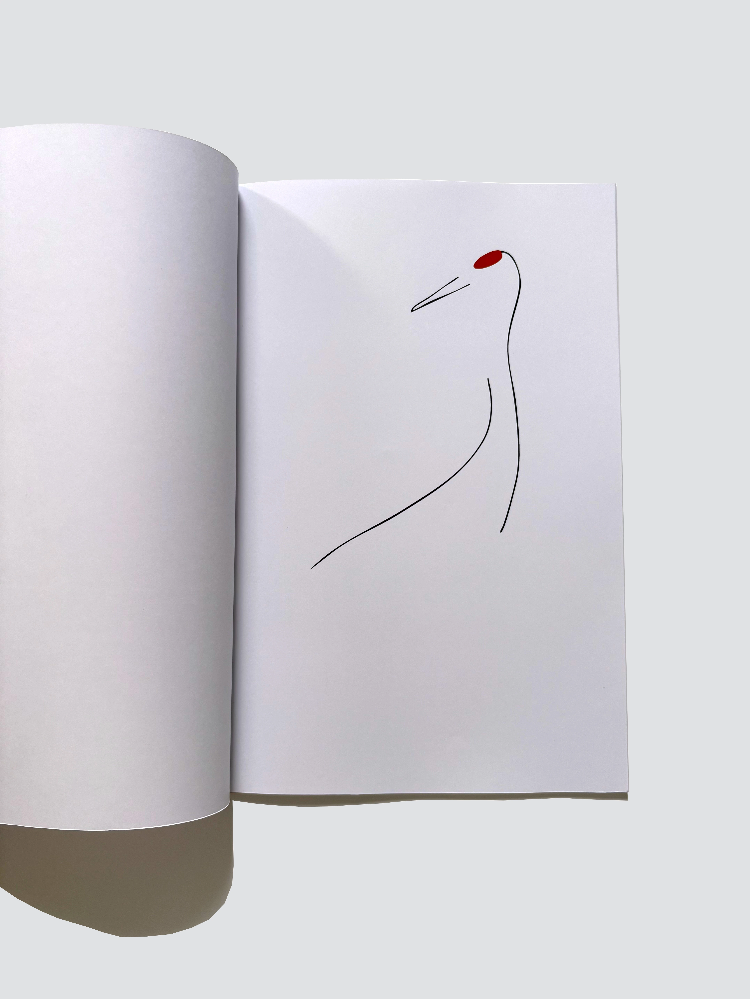
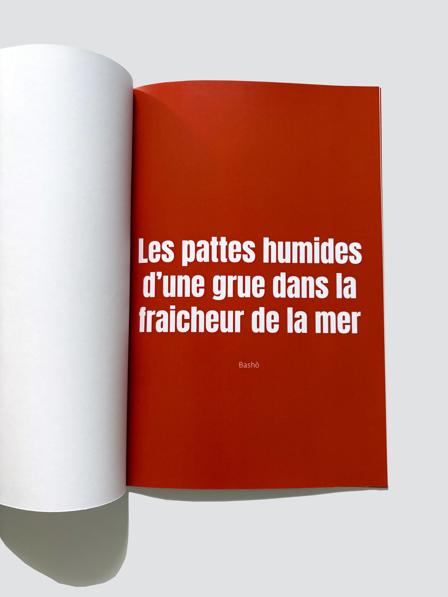
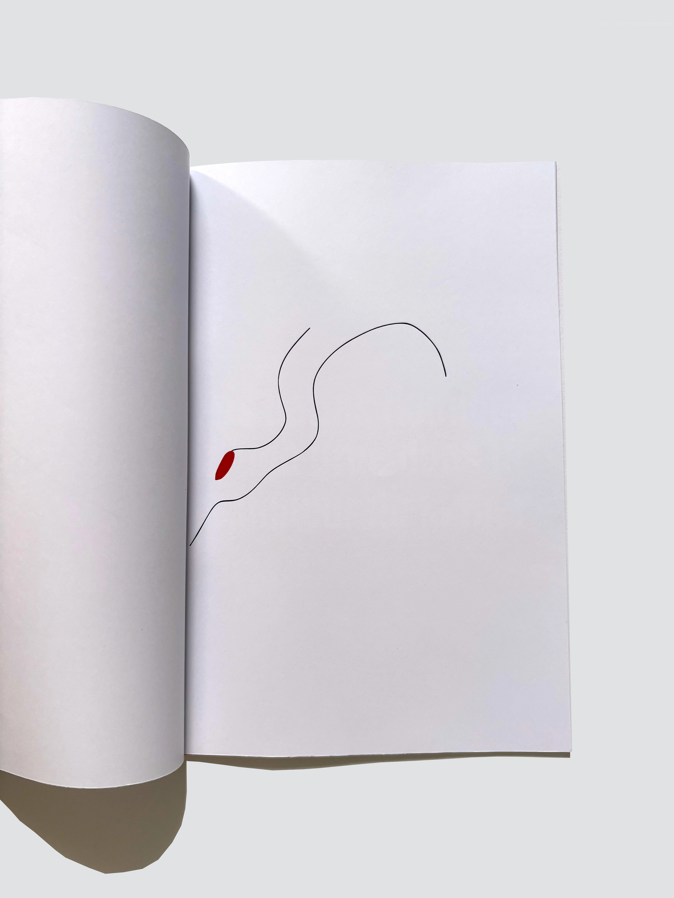

La grue du Japon
Dessin en courbes





Projet en collaboration avec le Zoo d'Amiens, représentation de la modestie des grues du Japon par deux courbes qui font apparaitre le corps de celle-ci. Des pages de pauses s'invitent, pour briser la routine du minimalisme.